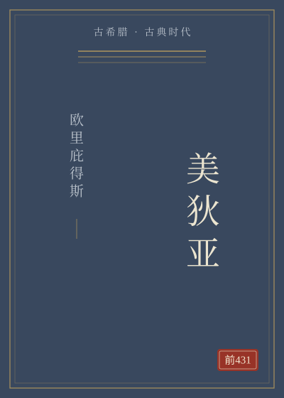
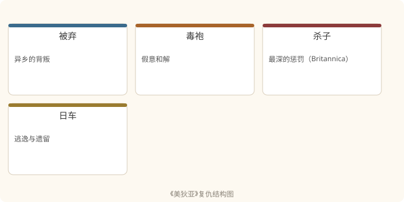

美狄亚
一、基本信息
| 作者 | 欧里庇得斯 |
|---|---|
| 成书/出版 | 公元前431年上演（Britannica：431 BCE） Euripides — Encyclopaedia Britannica 与 Medea (play by Euripides) — Encyclopaedia Britannica（百科全书） |
| 国别/地区 | 古希腊 |
| 时代 | 古代 · 古典时代 |
| 体裁 | 悲剧 |
| 语言 | 古希腊语 |

《美狄亚》复仇结构图（主题·结构图）
二、创作背景
Britannica：'a tragedy exploring injustice and revenge'（探不公与复仇的悲剧）；'Medea determines that she will punish Jason by murdering not only her own sons but also the Corinthian princess'（杀子以罚负心——Britannica）。
作者：三大悲剧家最后一位、以心理写实著称（B236）。
三、内容脉络
伊阿宋另娶科林斯公主；美狄亚被放逐（通说）。
假意和解：赠毒袍——公主与国王之死（通说待核）。
杀子复仇，驾日车离去（Britannica 语境+通说）。
四、主要人物表
| 人物 | 身份 | 说明 |
|---|---|---|
| 美狄亚 | 科尔基斯公主 | 复仇者（Britannica） |
| 伊阿宋 | 阿尔戈英雄 | 负心者（通说） |
五、主题与艺术特点
- 不公与复仇的悲剧（Britannica：exploring injustice and revenge）。
- 异乡人（barbarian）的身份暴力（通说待核）。
- 母性与复仇的悖论（通说）。
六、影响与评论
- Britannica：欧里庇得斯最著名的作品之一（one of his most famous works）。
Euripides — Encyclopaedia Britannica 与 Medea (play by Euripides) — Encyclopaedia Britannica（百科全书） - 女性复仇叙事的原型：后世文学与影视的母题（通说待核）。
Euripides — Encyclopaedia Britannica 与 Medea (play by Euripides) — Encyclopaedia Britannica（百科全书）
七、阅读建议
难点
- 希腊神话前史（金羊毛）注释。
- 申辩辞的长篇修辞。
- 《罗念生全集》悲剧卷（通说待核）。
- 英文译本（公有领域）。
对照《被缚的普罗米修斯》：两种反抗。
八、待核实
- 毒袍与日车结局细节核对。
- 克瑞翁/格劳刻人名核对。
- 科林斯上演未获首奖说待核。
本页主要来源
欧里庇得斯的其他收录作品：美狄亚